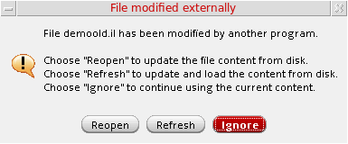
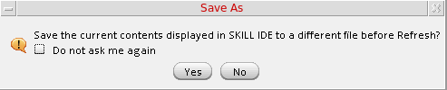
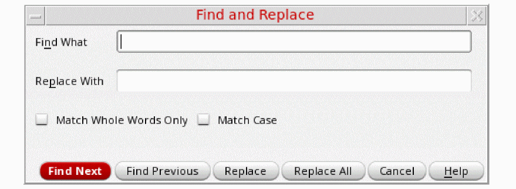
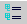
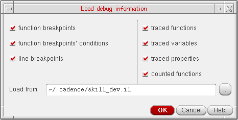

2
Getting Started
This chapter provides information to get you started with Cadence SKILL IDE. The information in this chapter is grouped into the following sections:
Configuring Your Work Environment
You can rearrange the assistants and toolbars to suit your individual work preferences. A customized configuration of toolbars and assistants is called a workspace.
You can define the following properties of your SKILL IDE work environment:
- The assistant panes that should be docked, floating, or hidden.
- The toolbars that should be docked or hidden.
- Position of each assistant pane and toolbar in your SKILL IDE window.
Showing or Hiding Toolbars
To manage your debugging space more efficiently, you can choose to show or hide the SKILL IDE toolbars.
To do so, choose Window - Toolbars - <Toolbar name>. The selected toolbar displays below the SKILL IDE menu bar. Alternatively, you can right-click anywhere in the menu bar or a toolbar and choose the required toolbar name from the context-menu to display it.
Choosing this option again hides the selected toolbar.
Moving Toolbars
SKILL IDE toolbars are dockable; therefore, you can move the toolbars to different locations in the workspace. To move a toolbar:
- Point to the move handle of the toolbar.
-
When the mouse pointer changes to a crosshair (), drag the toolbar to a new location
- If you drag the toolbar close to the edges of the SKILL IDE window, you see an outline of the area where the toolbar will be docked to the window frame. The toolbar snaps to this area when you release the mouse button.
- If you drag the toolbar to an area away from the IDE window frame—inside or outside the window—the toolbar becomes a floating toolbar.
Displaying Tool Assistants
SKILL IDE provides you with options to help you manage your assistants. You can also move and reposition the tool assistants to change your workspace layout.
To display or hide a tool assistant, choose Window - Assistants - <Assistant name>. To display or hide all tool assistants at once, choose Window - Assistants - Show All or Window - Assistants - Hide All.
Docking or Floating Tool Assistants
To dock a floating assistant pane:
- Drag the assistant pane by its title bar and move it close to the edges of the SKILL IDE window frame. When an outlined area appears, release the mouse button; the assistant pane snaps and fits in the outlined area.
- Double-click the title bar of the floating assistant pane.
- Click the Float/Dock button on the title bar of the docked pane.
To make a docked assistant pane float:
- Drag a docked pane by its title bar away from the edges of the SKILL IDE window frame and release the mouse button. The assistant pane becomes a floating assistant pane.
- Double-click the title bar of the docked assistant pane.
- Click the Float/Dock button on the title bar of the floating pane.
Displaying Tool Assistants as Tabs
You can display assistant panes as tabs by dragging and dropping one assistant on top of another.
To display an assistant in a tabbed format:
Setting SKILL IDE Options
SKILL IDE provides a number of options for customizing the behavior of SKILL IDE elements. The following options are accessible through the Options menu:
The options for customizing the SKILL status, editor, and color settings are described in the following sections.
For information on customizing the behavior of the Lint checker and the Profiler, see Setting Lint Options and Setting Profiler Options in Chapter 4.
Setting SKILL Status Options
The SKILL Status command allows you to customize the status settings for the SKILL debugger, compiler, parser, printer, stack, and trace.
To set the SKILL Status options:
The Options assistant displays with SKILL Status as the default tab.
The SKILL Status tab has the following sections:
-
Trace: Sets the tracing options for the debugger.
- traceArgs: If set, the system will save the evaluated arguments of function calls, which can then be displayed in the stacktrace.
- traceIndent: Sets the trace indentation format to numbers or '|'.
- tracelength: Sets the length of the trace output.
- tracelevel: Sets the depth of the nested trace printing.
-
save inline documentation strings: Saves the inline documentation strings in your source file. This option also preserves any existing newline characters '\n' in the inline documentation strings.
-
Print: Sets the printing options for the output.
- printinfix: Prints the arithmetic expressions and function calls in infix notation.
- echoInput: Prints all input to a log file.
- fullPrecision: If enabled, prints floating point numbers in full precision (usually 16 digits); otherwise, prints using 7 digits precision.
- pprintresult: Prints lists with alignment and indentation (for example, print 5 elements per line)
-
printpretty: Calls
printselfmethod when printing standard objects. - printlength: Sets the number of elements that can be printed in a list.
- printlevel: Sets the number of print levels.
-
Stack Trace: Sets stack trace options.
-
errsetTrace: Prints the errors and stacktrace information that is normally suppressed by
errset. - stacktraceDump: Prints the local variables when an error occurs.
- stacktrace: Prints the stack frames every time an error occurs. You can specify the depth of the stack that needs to be printed when an error occurs.
- stackTraceFormat: Sets the level of detail of the stack frame. Options are fullStack, onlyTop, onlyCalls.
- warningTrace: Prints the SKILL stack when a SKILL warning is issued.
- warningBreak: Enables SKILL execution to break when a SKILL warning is issued.
-
errsetTrace: Prints the errors and stacktrace information that is normally suppressed by
-
Debug: Sets the SKILL debugger options
- debugMode: Enables debug functions and allows you to redefine write-protected SKILL functions.
-
keepSrcInfo: Saves additional information for debugging. The source information (file/line information) is added to
funobjectduring compilation. -
autoReload: Debugger auto-reloads a file that is not loaded under
debugModewhen the user tries to single-step into the code defined by that file. It works only for Cadence context source files. -
showStepResult: Displays expression evaluation results. If showStepResult is enabled, the step results are printed in the CIW every time you click Step
or Next
 .
. - debugMacro: Sets the lineNumber on the expanded macro code to the lineNumber of the original form.
- verboseLoad: Displays the full path of the loaded file.
-
Parser: Sets the SKILL parser options
- multilineString: Allows SKILL strings inside double quotes to be spanned on several lines.
- keepNLInString: Saves the newline characters '\n' in strings. For more information about the related argument used with the sstatus function, see the Core Functions chapter of the Cadence SKILL Language Reference.
-
classAuxAutoLoad: Allows class search in .
auxfiles. - mergemode: Merges arithmetic expressions to minimize the number of function calls.
-
Compiler: Sets the SKILL compiler options
- lazyComp: Disables compiling of top-level functions when they are defined. Instead, compiles them when they are called.
-
optimizeNestedLet: Instructs the SKILL compiler to parse the code for
letconstructions and expand/remove them by moving their local variables to the top-level function's local variables section. It reduces the multiple nestedletdeclarations. - optimizeTailCall: Sets the tail call recursion on, which prevents runtime stack overflow when a function is called recursively. Meant only for Scheme functions.
- writeProtect: Sets write-protection on. When functions being defined have write-protection enabled, they cannot be redefined
Nested let and tail call optimizations do not work in debugMode. You might encounter warning messages in the following situations:
-
If you select the optimizeNestedLet or optimizeTailCall check box and then enable debugMode, a warning message displays stating that the newly compiled code will not be optimized in
debugMode. You either need to disable the debugMode or deselect the optimizeNestedLet and optimizeTailCall check boxes. -
If you enable debugMode and then select the optimizeNestedLet or optimizeTailCall check box, a warning message displays stating that nested let and tail call optimizations do not work in
debugModeand the debugMode is automatically disabled. If you deselect the optimizeNestedLet and optimizeTailCall check boxes, the debugMode is automatically restored.
-
If you select the optimizeNestedLet or optimizeTailCall check box and then enable debugMode, a warning message displays stating that the newly compiled code will not be optimized in
Setting SKILL IDE Editor Options
The Editor command lets you customize the settings for the SKILL IDE editor.
To customize the behavior of the SKILL IDE editor:
The Options assistant displays with Editor as the default tab.
This section explains the customizations you can make in the SKILL IDE editor.
- Show Line Number: Displays line numbers to the left of the source code pane against each line of code.
- Show Tooltips When Hover Over Name: Displays tooltips when you hover the mouse pointer over any object, such as a function, class, method, or variable. You can also press the F3 key to select or deselect this check box.
- Highlight Matching Text: Highlights all occurrences of a search string in cyan.
- Enable Name Completion: Enables auto-completion of keywords or function names based on your keystrokes. You can also press the F4 key to select or deselect this check box.
- Auto Indent: Automatically indents each new line in the editor to the left or right by a predefined number of spaces.
- Emulate Tabs: Uses spaces to emulate tabs, so that a fixed set of spaces (equal to the tab size) is inserted when the tab key is pressed.
- Tab Size: Sets the number of spaces to be inserted for each tab character.
- Font Size: Sets the font size of the code in the editor window.
- Font Style: Sets the font style of the code in the editor window.
Customizing the Color Settings
The Color Settings command lets you customize the color settings for the SKILL IDE editor window.
To set the color preferences for various elements of the SKILL IDE editor window:
The Options assistant displays with Color as the default tab.
Use the Set color drop-down list box to change the color preferences for the following code elements:
- Foreground: Changes the foreground color of the text.
- Background: Changes the background color of the editor window.
- Selected Text: Changes the highlight color of the text selection.
- Matching Text: Changes the highlight color of the text matching the selected text.
- Matching Parenthesis: Changes the highlight color for the matching brackets.
- Mismatching Parenthesis: Changes the highlight color of the mismatched bracket.
- Error: Changes the highlight color for the errors in the editor window.
- Step: Changes the highlight color for Step and Next commands.
-
Cross-Highlight: Changes the cross highlight color of code in the editor window.
- Keyword: Changes the color for SKILL language keywords.
- Comment: Changes the color of comments in the SKILL code.
- Number: Changes the color of numeric values in the SKILL code.
- String: Changes the color of strings in the SKILL code
- Highlight1, Highlight2, Highlight3, Highlight4, Highlight5: Changes the custom highlight colors.
Click a color in the color swatch to change the color of the selected element. Click Default Color to switch it back to the default color.
Create custom colors by dragging the mouse pointer inside the color palette and adjusting the contrast. You can then click Add to Custom Colors to save the new color as a custom color.
Using Basic Editing Features
SKILL IDE lets you edit and debug SKILL code in a graphical user interface (GUI). When you open a SKILL file or create a new one, the SKILL IDE editor gets invoked.
Creating New Files
-
To create a new file, do one of the following:
A file with a default name (Document_n) opens in the current directory. -
To save this file, click on the File toolbar or choose File – Save As. The Save As dialog box displays.
The first time you display the Save As dialog box by either selecting File – Open or File – Save As, the current working directory displays as the default working directory. On subsequent calls, the last used directory is used as the default working directory. -
Specify a name for the file in the File name field and select an appropriate file format from the Files of type drop-down list.
-
Click Save.
Opening Existing Files for Reading/Editing
-
To open an existing file for editing, do one of the following:
- Choose File – Open
- Click a file name from the list of recently opened files in the File menu.
- Click on the File toolbar
To open an existing file for viewing only, choose File – Open for Read.
The Choose a File dialog box displays, listing all the available files. -
Browse to select the file you want to read or edit and click Open. The selected file opens in the editor.
If you open the file in read-only mode, the title bar of the SKILL IDE window displaysSKILL IDE Reading: <name_of_the_opened_file>. If you open the file in edit mode, the title bar displaysSKILL IDE Editing: <name_of_the_opened_file>.If you attempt to open an already open file that has unsaved changes, a warning message appears. You are then prompted to reload the file from the disk.If the file currently open in the SKILL IDE editor has been edited using some other editor, a warning message appears. You are then prompted to either reopen the updated file without loading, reload the original file from the disk, or ignore the changes made using the other editor.
If you choose to reopen the updated file without loading or reload the original file from the disk, you are prompted to save the current contents of the file to a different file before the reopen or refresh operation.
If you do not wish to be prompted again, select the Do not ask me again option in this dialog box.
Switching Between Read-Only and Edit Modes
To switch from edit mode to read-only mode, choose File – Make Read Only.
When you edit a file in edit mode, the 
To switch back to edit mode, choose File – Make Editable.
When you edit a file in read-only mode, the
Discarding Edits
- Choose File – Discard Edits. A warning message that prompts you to confirm the action appears.
- Click Yes to confirm. Once discarded, the edits can not be restored.
Finding and Replacing Text
To find a text string in your file:
-
Choose Edit – Find (Ctrl+F). The Find and Replace dialog box displays.
 - In the Find What field, type the search string and then, set the following options:
- Click Find Next (Ctrl+Shift+F) or Find Previous (Ctrl+Shift+B) to find the next or previous occurrence of the search string in the file.
You can also access the search functionality from the Search toolbar, as described below:
In the Search toolbar, choose Search from the first drop-down list box. In the second drop-down list box, type the search string or click the drop-down arrow to choose a previously used search string and then, press Enter. After the search string is found, you can click the Find Previous and Find Next  icons to find the previous or next occurrence of the search string.
icons to find the previous or next occurrence of the search string.
To replace a text string in your file:
- Choose Edit – Find (Ctrl+F). The Find and Replace dialog box displays.
- In the Find What field, type the search string.
- In the Replace With field, type the text string you want to replace the search string with.
- Set the following options:
- Click Find Next (Ctrl+Shift+F) to find the search string. If the search string is found, it is highlighted in the source code pane.
- Click Replace to replace the search string with the new string or Replace All to replace all occurrences of the search string with the new string.
Printing Files
SKILL IDE provides the basic print features to help you print your SKILL files. To print a file:
- Click on the File toolbar or choose File – Print. The Print Dialog box displays.
- Click Options to specify the print options for the current print job. You can specify the printer name, print range, output settings, and the color mode for the print job.
- Click Print to send the file to the selected printer for printing.
Closing Files
If you have opened multiple files in the editor, to close each file separately do one of the following:
To close all files simultaneously, choose File – Close All.
When you click Close All, if any of the open files has unsaved changes, the Save Changes dialog box displays. This dialog box prompts you to save the open files before exiting the editor. Select the check box adjacent to the files you want to save and click OK.
In addition, you get the Save Changes dialog box when trying to close the Virtuoso CIW directly without exiting the SKILL IDE editor. If you click Cancel, the exit from Virtuoso CIW too gets aborted.
Exiting the Editor
Using Advanced Editing Features
Viewing Function Definitions
To view the definition of a function in the source code pane, right-click the function name and choose Go To Source ( ) from the context-menu. The first and the last line of the function definition is highlighted in gray.
Browsing Function Tree
To browse the calling tree of user-defined functions directly from the source code pane, right-click the function name and choose Go To Code Browser from the context-menu. The Code Browser assistant gets displayed with the name of the selected function in the Function drop-down list and its expanded tree in the results pane.
Matching Parentheses
For better code inspection, you can use the Go To Matching Parenthesis command.
When you place the cursor on an opening or closing parenthesis and choose Edit – Go To Matching Parenthesis, the cursor moves to the matching parenthesis of the opening or closing parenthesis.
Going to a Line
Use the Go To Line Number command to go to a specific line in a file.
When you choose Edit – Go To Line Number and enter a line number, the cursor moves to the specific line. Having located a line, click OK close the dialog box or Apply to keep it open and continue to search for other lines.
Selecting Text Between Matching Parentheses
When you place the cursor on an opening or closing parenthesis and press Ctrl+Shift+M, the text between the two matching parenthesis gets selected.
Auto Completing Function Names
The auto-complete feature enables auto completion of keywords or function names based on your keystrokes. To enable this option, choose Options – Editor. Then select the Enable name completion check box.
When name completion is enabled, a list of valid function names displays in the tooltip on entering three or more keystrokes, or on pressing Ctrl+Space.
If the Finder assistant is open, it is updated with the finder documentation of the selected function.
Click an appropriate function name in the pop-up list to add it to your code.
The list of valid function names is picked up from the finder (.fnd) files found in:
your_install_dir/doc/finder/language/functionArea/*.fnd
You can add your own internal functions to the auto-complete list by copying your function information to a finder database file under the finder directory. The name-completion option can also show matches with variable names and other function names that do not have finder files. For more information, see Customer Data in Appendix D, “Using SKILL API Finder.”
Indenting Your Code
Use the Shift left ( ) or Shift right
(Clicking the Shift left icon removes one level of indent from the current line (that is, the line on which the mouse pointer is placed) or selected block of code (including a partially selected line). Shift left stops indenting to left when one of the source lines has reached its limit, which is less than the tab stop value. If tab stop is set to 4, and there are only one-three spaces to the left of the line, then that line cannot indent to the left any more.
Clicking the Shift right icon adds one level of indent to the current line or selected block of code.
Folding and Expanding Your Code
You can use SKILL IDE’s code folding feature to collapse or expand parts of your code, helping you navigate and focus on specific sections. You can fold any code section as long as it is contained within a set of parenthesis ( ) that are not on the same line number. It is also possible to fold nested code blocks.
Click the Outline View() icon in the Edit toolbar to fold the code in the SKILL IDE editor window. Alternatively, right-click in the left margin of the source code pane and choose Outline Mode from the context menu. When the code is folded, a icon appears to the left of the code blocks.
On folding or collapsing the code, the lines containing the opening and closing parenthesis form an outline of the folded code, while the lines within the parenthesis are hidden. For example in the image below, line number 1 and 6 contain the opening and closing parenthesis, and thus form the outline of the folded code.
Click the Expand All () icon in the Edit toolbar to unfold or expand the code in the SKILL IDE editor window. Alternatively, right-click in the left margin of the source code pane and choose Expand All from the context menu. When the code is expanded, a icon and a vertical bar appear to the left of the code blocks.
To unfold or expand only a specific code block, right-click in the left margin of the code block that needs to be expanded and choose Unfold Line from the context menu. Unfolding a specific code block does not unfold the nested code blocks within the top-level code block.
Important Points to Note
- Folding or unfolding the code does not change the flow of code in any way.
- Undo and redo operations have no impact on code folding.
- Code folding changes are not persistent across sessions. After you close a file containing folded code, the file will be restored to its previous state.
Starting a Debugging Session
This section provides information on preparing a file for debugging in SKILL IDE. For information about the features that help you control the flow of your program during a debugging session, see Chapter 3, “Controlling Program Execution.”
The SKILL IDE does not support debugging macros and other manually created code.
Loading a File for Debugging
To debug a SKILL file, you need to first load it. To do so:
- Click on the File toolbar or choose File – Open. The Open File dialog box displays, listing all the available files.
- Browse to locate the file you want to load and click Open. The selected file opens in the source code pane.
-
Click
 on the File toolbar or right-click in the source code pane and choose Load from the context-menu to load the file for debugging.
on the File toolbar or right-click in the source code pane and choose Load from the context-menu to load the file for debugging.
After the file is loaded, the load icon changes from to .
To simultaneously open and load a file for debugging, click  on the File toolbar or choose File – Open and Load.
on the File toolbar or choose File – Open and Load.
Executing a Function
To start debugging, you need to execute a function defined in the file that has been loaded. There are two ways to do this:
Executing the function from the Search Toolbar
-
In the Search toolbar, choose Run Function from the first drop-down list box.
- Then, specify the name of the function you want to run (with the required argument values) in the second drop-down list box and press Enter.
Executing the function from the CIW
In the CIW, type the function name (with the required argument values) and press Enter.
Saving and Reusing the Debug Information
This section provides information on saving and reusing the debug information.
Saving the Debug Settings
You can export the debug settings of your current session to a SKILL file for future use. The saved debug settings includes current line and function breakpoints, their conditions, traced functions, variables, and properties. To save the debug settings of your current session:
- Choose Debug – Save Settings. The Choose file name to save debug data dialog box displays.
- Specify the name of the output file in the File Name field and click Save.
Loading the Debug Settings
If you accidentally delete all breakpoints from your code, you can restore them by loading the debug information from a previously saved file. To do so:
-
Choose Debug – Load Settings. The Load debug information dialog box displays.
 - Specify the file from which you want to load your saved debug settings in the Load from field.
- Click OK.
Return to top